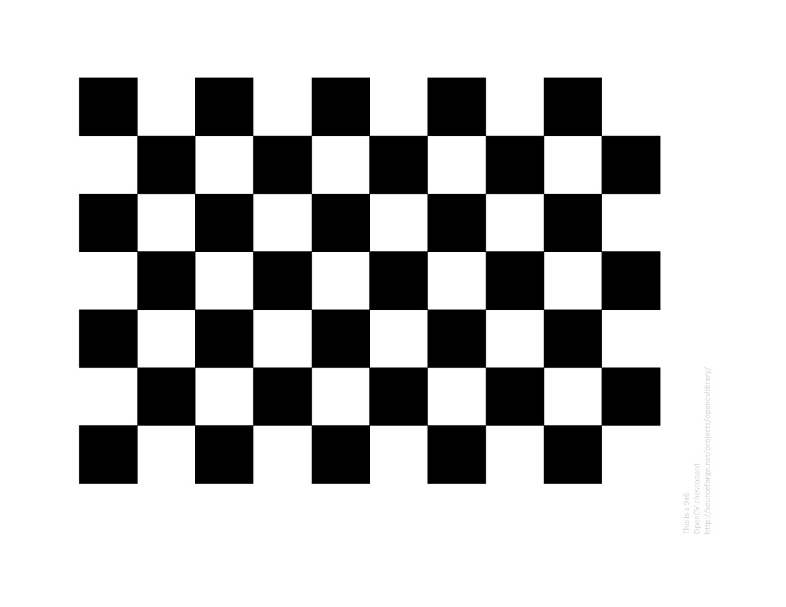
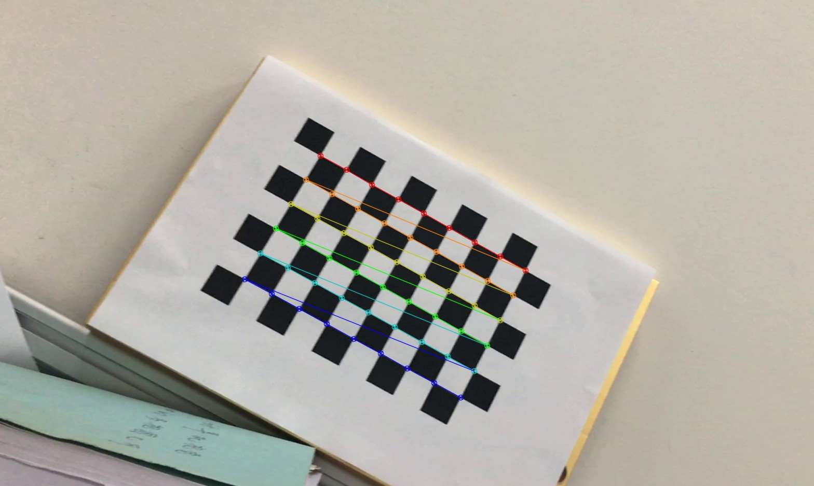
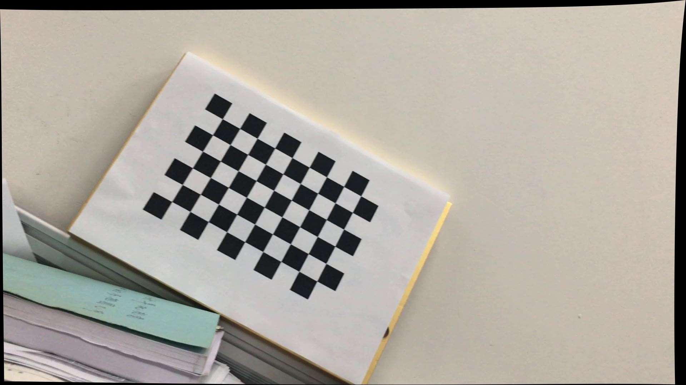

Python使用OpenCV進行標定
這篇文章主要介紹了Python使用OpenCV進行標定,小編覺得挺不錯的，現在分享給大家，也給大家做個參考。一起跟隨小編過來看看吧
本文結合OpenCV官方樣例，對官方樣例中的程式碼進行修改，使其能夠正常執行，並對自己採集的資料進行實驗和講解。
一、準備
OpenCV使用棋盤格板進行標定，如下圖所示。為了標定相機，我們需要輸入一系列三維點和它們對應的二維影象點。在黑白相間的棋盤格上，二維影象點很容易通過角點檢測找到。而對於真實世界中的三維點呢？由於我們採集中，是將相機放在一個地方，而將棋盤格定標板進行移動變換不同的位置，然後對其進行拍攝。所以我們需要知道(X,Y,Z)的值。但是簡單來說，我們定義棋盤格所在平面為XY平面，即Z=0。對於定標板來說，我們可以知道棋盤格的方塊尺寸，例如30mm，這樣我們就可以把棋盤格上的角點座標定義為(0,0,0)，(30,0,0)，(60,0,0)，···，這個結果的單位是mm。
3D點稱為object points，2D影象點稱為image points。

二、檢測棋盤格角點
為了找到棋盤格模板，我們使用openCV中的函式cv2.findChessboardCorners()。我們也需要告訴程式我們使用的模板是什麼規格的，例如8*8的棋盤格或者5*5棋盤格等，建議使用x方向和y方向個數不相等的棋盤格模板。下面實驗中，我們使用的是10*7的棋盤格，每個方格邊長是20mm，即含有9*6的內部角點。這個函式如果檢測到模板，會返回對應的角點，並返回true。當然不一定所有的影象都能找到需要的模板，所以我們可以使用多幅影象進行定標。除了使用棋盤格，我們還可以使用圓點陣，對應的函式為cv2.findCirclesGrid()。
找到角點後，我們可以使用cv2.cornerSubPix()可以得到更為準確的角點畫素座標。我們也可以使用cv2.drawChessboardCorners()將角點繪製到影象上顯示。如下圖所示：

三、標定
通過上面的步驟，我們得到了用於標定的三維點和與其對應的影象上的二維點對。我們使用cv2.calibrateCamera()進行標定，這個函式會返回標定結果、相機的內參數矩陣、畸變係數、旋轉矩陣和平移向量。
四、去畸變
第三步我們已經得到了相機內參和畸變係數，在將影象去畸變之前，我們還可以使用cv.getOptimalNewCameraMatrix()優化內參數和畸變係數，通過設定自由自由比例因子alpha。當alpha設為0的時候，將會返回一個剪裁過的將去畸變後不想要的畫素去掉的內參數和畸變係數；當alpha設為1的時候，將會返回一個包含額外黑色畫素點的內參數和畸變係數，並返回一個ROI用於將其剪裁掉。
然後我們就可以使用新得到的內參數矩陣和畸變係數對影象進行去畸變了。有兩種方法進行去畸變：
(1)使用cv2.undistort()
這是一個最直接的辦法，只用直接呼叫函式就可以得到去畸變的影象，使用上面的ROI可以對其進行剪裁。程式碼如下：
1 2 3 4 5 6 7 | # undistortdst = cv2.undistort(img, mtx, dist, None, newcameramtx)# crop the imagex,y,w,h = roidst = dst[y:y+h, x:x+w]cv2.imwrite('calibresult.png',dst) |
下圖顯示將一張圖片去畸變後，保留黑色畫素的結果：

（2）使用remmaping
這是一個分兩步的方法，首先計算一個從畸變影象到非畸變影象的對映，然後使用這個對映關係對影象進行去畸變。
程式碼如下：
1 2 3 4 5 6 7 8 | # undistortmapx,mapy = cv2.initUndistortRectifyMap(mtx,dist,None,newcameramtx,(w,h),5)dst = cv2.remap(img,mapx,mapy,cv2.INTER_LINEAR)# crop the imagex,y,w,h = roidst = dst[y:y+h, x:x+w]cv2.imwrite('calibresult.png',dst) |
五、反投影誤差
通過反投影誤差，我們可以來評估結果的好壞。越接近0，說明結果越理想。通過之前計算的內參數矩陣、畸變係數、旋轉矩陣和平移向量，使用cv2.projectPoints()計算三維點到二維影象的投影，然後計算反投影得到的點與影象上檢測到的點的誤差，最後計算一個對於所有標定影象的平均誤差，這個值就是反投影誤差。
程式碼
所有步驟的程式碼如下所示：
1 2 3 4 5 6 7 8 9 10 11 12 13 14 15 16 17 18 19 20 21 22 23 24 25 26 27 28 29 30 31 32 33 34 35 36 37 38 39 40 41 42 43 44 45 46 47 48 49 50 51 52 53 54 55 | #coding:utf-8import cv2import numpy as npimport glob# 找棋盤格角點# 閾值criteria = (cv2.TERM_CRITERIA_EPS + cv2.TERM_CRITERIA_MAX_ITER, 30, 0.001)#棋盤格模板規格w = 9h = 6# 世界座標系中的棋盤格點,例如(0,0,0), (1,0,0), (2,0,0) ....,(8,5,0)，去掉Z座標，記為二維矩陣objp = np.zeros((w*h,3), np.float32)objp[:,:2] = np.mgrid[0:w,0:h].T.reshape(-1,2)# 儲存棋盤格角點的世界座標和影象座標對objpoints = [] # 在世界座標系中的三維點imgpoints = [] # 在影象平面的二維點images = glob.glob('calib/*.png')for fname in images: img = cv2.imread(fname) gray = cv2.cvtColor(img,cv2.COLOR_BGR2GRAY) # 找到棋盤格角點 ret, corners = cv2.findChessboardCorners(gray, (w,h),None) # 如果找到足夠點對，將其儲存起來 if ret == True: cv2.cornerSubPix(gray,corners,(11,11),(-1,-1),criteria) objpoints.append(objp) imgpoints.append(corners) # 將角點在影象上顯示 cv2.drawChessboardCorners(img, (w,h), corners, ret) cv2.imshow('findCorners',img) cv2.waitKey(1)cv2.destroyAllWindows()# 標定ret, mtx, dist, rvecs, tvecs = cv2.calibrateCamera(objpoints, imgpoints, gray.shape[::-1], None, None)# 去畸變img2 = cv2.imread('calib/00169.png')h, w = img2.shape[:2]newcameramtx, roi=cv2.getOptimalNewCameraMatrix(mtx,dist,(w,h),0,(w,h)) # 自由比例引數dst = cv2.undistort(img2, mtx, dist, None, newcameramtx)# 根據前面ROI區域裁剪圖片#x,y,w,h = roi#dst = dst[y:y+h, x:x+w]cv2.imwrite('calibresult.png',dst)# 反投影誤差total_error = 0for i in xrange(len(objpoints)): imgpoints2, _ = cv2.projectPoints(objpoints[i], rvecs[i], tvecs[i], mtx, dist) error = cv2.norm(imgpoints[i],imgpoints2, cv2.NORM_L2)/len(imgpoints2) total_error += errorprint "total error: ", total_error/len(objpoints) |
以上就是本文的全部內容，希望對大家的學習有所幫助，也希望大家多多支援itread01.com。